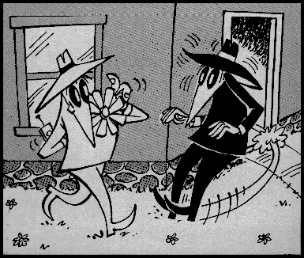

We need your help to make Mozilla a more secure platform. See below for ways to get involved.
These pages are to describe the project of adding security to Mozilla components. We do not cover cryptographic security (SSL, certificates, S/MIME, etc.). For such topics, see Open Source PKI Projects.
Instead we talk about the ways of adding Java and JavaScript security to Mozilla components, mainly in terms of mobile code and the browser interfaces available to programs from those languages.
This is a difficult task in any event, but is particularly tricky for Mozilla. This is because Mozilla makes increasing use of Internet technologies to implement the browser itself. This has many benefits for modularity, cross-platform development, and encouraging development by a wider range of people. However, it also makes the process of ensuring browser security more challenging because it requires building a wall between the trusted browser and the untrusted content it displays.
The Mozilla Security Newsgroup is a good place to raise security-related issues.
We need your help! If any of the projects above interests you, let us know. In addition, we need more community security review. Pick a Mozilla module you know and start looking for buffer overruns, misuse of privileges, and other security problems. Check back here soon for a list of things to look out for. Let's prove to the world that open source development leads to secure software!